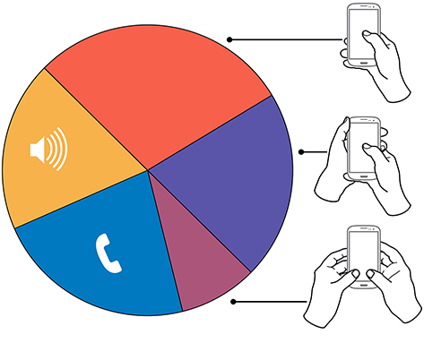

My NIN keyboard project is about reinventing the current inputting system of smartphones. The market currently offers few alternatives which replace and improve standard QWERTY keyboards. IMEs are mostly modded to appear differently but not to fundamentally change the way they function (including changing the themes or slightly altering the appearance of the keyboard)My goal is to decrease mistakes and make inputting text more comfortable for the user. To achieve this, I read up on how thumbs operate on a screen. It turns out that larger screens have more so called 'ow' space on the screen, meaning that the thumb has to make a painful stretch to make it up near the top. I've tried my best to contain the design within the comfortable zone to ensure that the NIN can not only be used with one hand, but can be used without strain. The prototype I made in Adobe XD cannot input fields at the moment as I am focusing on creating the application itself with Kotlin and Android Studio. Here is a still image of the final design (and how it will look on a phone with a left-handed setup).
I have also looked at how UI and UX design can be applied to make the keyboard a better product for the end user. Part of This involved discussion with other people who shared this issue with me over online chats. As well as designing to suit the users, I also designed in a way that would be the easiest for a beginner to code but even then the challenged proved to great, Kotlin and advanced application development is too large an undertaking for such a short timescale, I will continue working on the development of this application in the hopes of completing a functioning version. Although I did not manage to master Kotlin quickly enough to effectively apply for now, I still researched the market to see if I could further develop my ideas as I am working to create a functioning product. 
The graph above demonstrates how users communicate the most. The primary method is shown to be one handed typing. If you only use one thumb on a keyboard initially designed for 2-8 fingers, you will run into some issues along the way. The second most popular method is essentially the same but with another hand supporting the phone (likely to avoid dropping it). This still showcases the significance of desinging a system to focus on only using one thumb. There are still a minority who type with two thumbs, it is the smallest percentage shown on this graph but still inspires another possibility for this project. Once a working version is finished, I could attempt to design a similar system which takes dual-thumb-typists into account. This would become an attachment to the NIN keyboard and simply become another setting among the left and right handed settings.